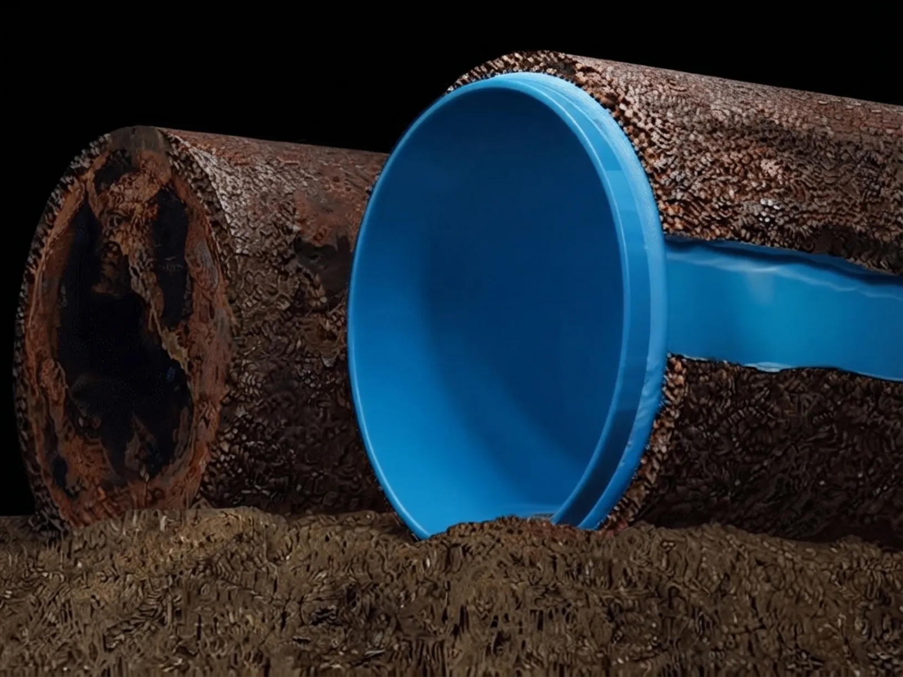
Trenchless Sewer Line Repair
Don't tear up your yard or driveway for a sewer repair.
Does your basement flood every time it rains hard? We install a permanent fix for homeowners across Chicagoland and Central Ohio.
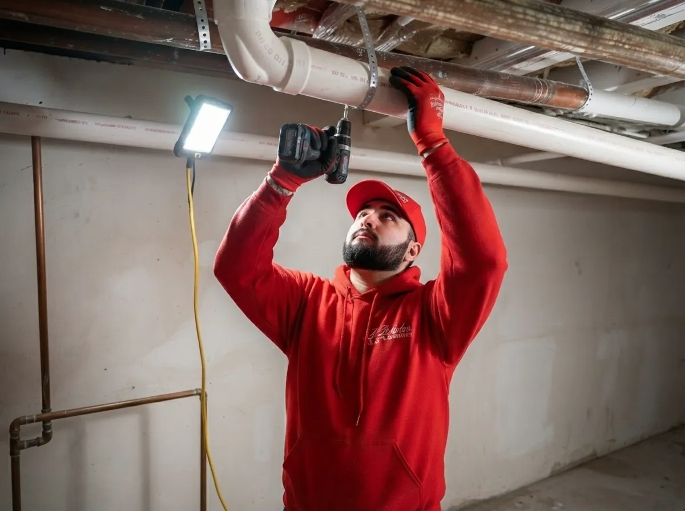
There are several signs your basement needs an overhead sewer system. Some are subtle. Others aren’t. Here’s what to look for, from mild to severe:
A little backup at the floor drain during heavy rain, gone by morning. Easy to ignore. It’s usually the first sign your sewer connection can’t keep up.
The line gets rodded, it clears, and a few weeks later the backup returns. That’s not a clogging problem anymore. It’s a sign the connection itself is the limit.
Sewage in a finished basement. Ruined flooring, drywall, belongings. At this point, another temporary fix isn’t worth the risk of round two.
An overhead sewer system stops flooding when the street sewer can’t keep up, using gravity for the upper floors and a pump for everything below it. Here’s how it fits together:
Every drain below the street sewer’s flow line, like your floor drain, a basement bathroom, or a laundry line, normally relies on gravity to reach the sewer. An overhead sewer system reroutes those drains into a sump pit instead.
An ejector pump lifts that wastewater up to a line above flood level, where a check valve keeps it from flowing back down. From there, gravity carries it the rest of the way to the street sewer, the same as every drain upstairs.
In short, it doesn’t replace your current drainage, it adds to it: extra capacity, positioned somewhere floodwater can’t reach. If you want the full picture, we’ve written a guide that walks through it.
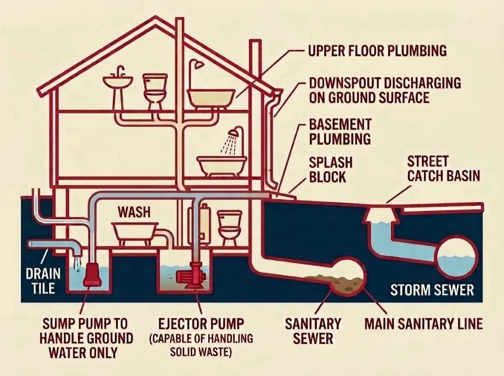
An overhead sewer installation is for new construction or a home that’s never had the system, not a home upgrading an inadequate one. Here’s how each applies:
Either way, the goal is the same: raise your basement’s drains above the level the street sewer can reach, not the rest of the house.
Some jurisdictions require an overhead sewer system in specific situations. We can tell you what applies to your property.
Overhead sewer conversion is for a home whose connection has reached its limit, not one still solvable with a rodding visit. Here’s what changes:
Either way, conversion is the permanent version of the same fix. It’s not a strike against rodding or maintenance, it’s for when the underlying connection is the actual problem, not the clog.
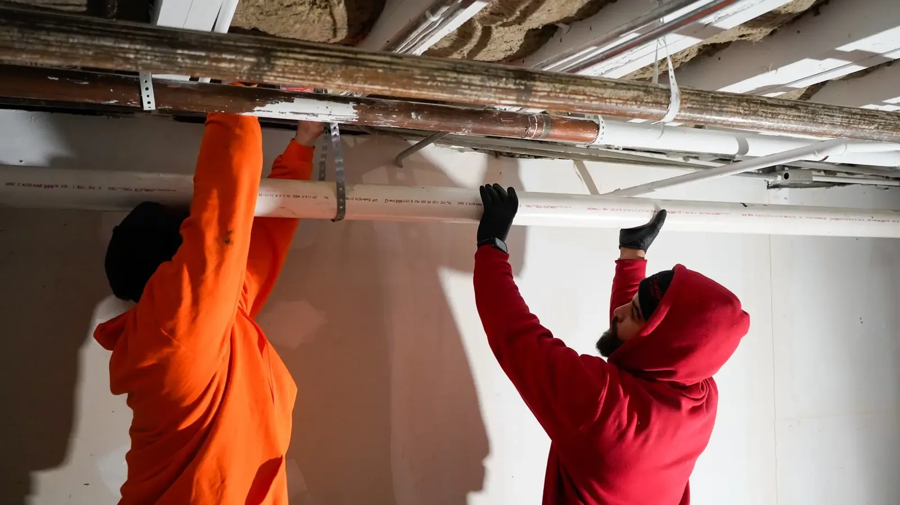
A sump pump, a backwater valve, and an overhead sewer system each solve a different basement water problem, and only one of them fixes a sewer connection that’s reached its limit. Here’s how they compare:
| Sump Pump | Backwater Valve | Overhead Sewer System | |
|---|---|---|---|
| What It Solves | Groundwater seeping in through the foundation or under the slab. | Sewage flowing backward into the house through the drain line. | A sewer connection that backs up because it sits too low relative to the street sewer. |
| How It Works | Collects groundwater in a pit and pumps it outside, away from the house. | A flap in the line closes automatically when flow reverses, blocking sewage from coming back in. | Reroutes the low drains into a sump pit, then an ejector pump lifts that wastewater above flood level before it reaches the street sewer. |
| When It’s Enough | When the problem is groundwater, not sewage. It doesn’t touch a sewer backup at all. | When your plumbing sits high enough above the street sewer for a passive valve to do the job. Drains stay unusable while it’s closed. | When a passive valve isn’t enough. Your plumbing sits low enough that only actively raising the connection solves it for good. |
We answer calls 24/7, even on weekends and holidays. Once you schedule a visit, we start with a thorough look at your property, not a sales pitch.
We walk the drainage, lay out every option, and let you decide before we do any work.
You get a flat rate before any money changes hands. No pressure to decide on the spot.
We stand behind every job we perform. Every overhead sewer conversion gets tested before we leave, not just installed.
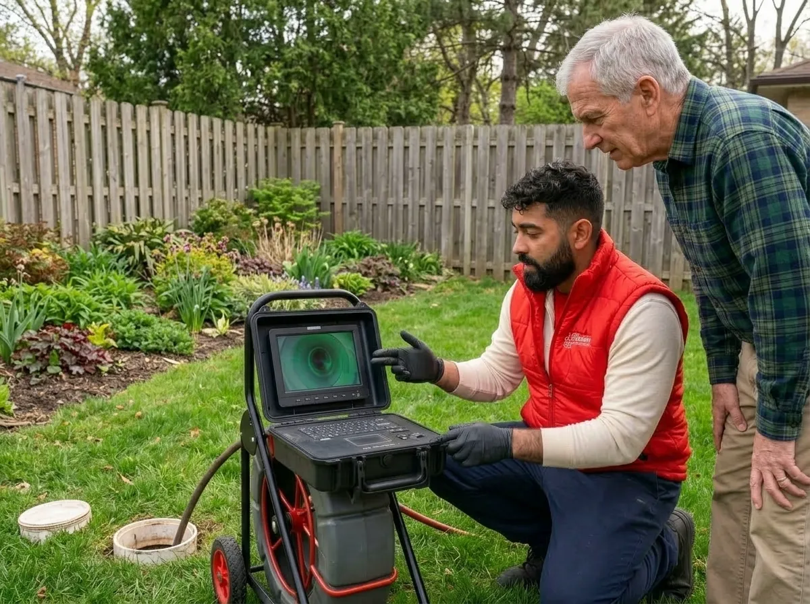
Watch a quick walkthrough of how an overhead sewer system works, the signs it’s time to call, and what our property assessment actually looks like.
"We had Scott and Payton come by and give us a camera review of our sewer and discuss the different remedies for making sure we didn't have any backups in the future. They were very thorough and knowledgeable and super nice guys."
"We've used J Blanton before [...] Dave and Alexis were on site and prepared to deal with the muck and the troubles. [...] We did really appreciate their efforts, their openness and keeping us apprised of everything going on, the ups and downs of different options and really trying to be budget conscious. Will definitely use them again if the need should arise."
"Andrew was out in about and hour and fixed our sewer back up in less than that, fire significantly cheaper than any other place we've used! Thank you!"
Start with how often it happens and how bad it's gotten. An occasional backup is an early sign, a recurring one is a bigger sign.
Start with how often it happens and how bad it's gotten. An occasional backup at the floor drain during heavy rain is an early sign. If you've had the line rodded and the backup keeps coming back, that's a sign the connection itself can't keep up. If it's already caused real damage, a flooded basement, sewage in your belongings, that's the clearest sign of all. Any of these is worth a property assessment to see what your home actually needs.
A sump pump handles groundwater, a backwater valve blocks backflow. An overhead sewer system actively raises your drainage above flood level.
A sump pump handles groundwater seeping in through your foundation, a different problem than a sewer backup entirely. A backwater valve blocks sewage from flowing back into the house, and works well when your plumbing sits high enough above the street sewer for that to be enough on its own. An overhead sewer system is the option when it isn't: it actively raises your basement's drainage above the level the street sewer can reach, instead of just blocking the backflow.
Most overhead sewer installations take 2 to 5 days, depending on your home's layout and connection routing.
Most overhead sewer installations take 2 to 5 days, depending on your home's layout and how the connection needs to be routed.
It starts with a property assessment, then we design the setup, check local code, install it, and test the pump before we call it done.
It starts with the property assessment you'd get on any visit, a look at your drainage and where the connection sits relative to the street sewer. From there, we design the setup for your home, check what local code requires, do the installation, and test the pump and connection before we call it done.
Cost depends on a few things specific to your home. We'll walk through it all with you and give you a flat rate before any work begins.
Cost depends on a few things specific to your home: how deep the connection needs to go, your home's layout, whether an ejector pit is already in place or needs to be added, and how easy the work area is to access. We'll walk through all of that with you and give you a flat rate before any work begins.
Some jurisdictions require it in specific situations, but there's no single blanket rule across every city we serve.
Some jurisdictions require an overhead sewer system in specific situations, but there's no single blanket rule across every city we serve. We can tell you exactly what applies to your property during your assessment.
Annual Protection Plan
Prevent catastrophes before they disrupt your life. The No Drip Club ensures your waste and sewer lines are monitored and serviced regularly by J. Blanton’s absolute best.

Don't tear up your yard or driveway for a sewer repair.
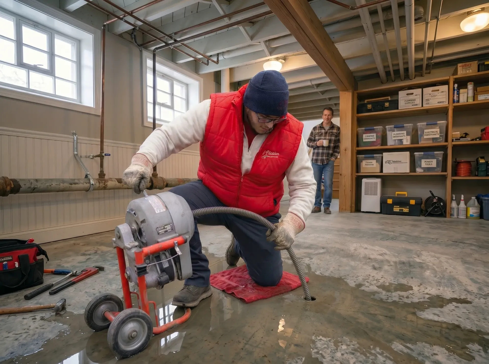
Clears most blockages fast.
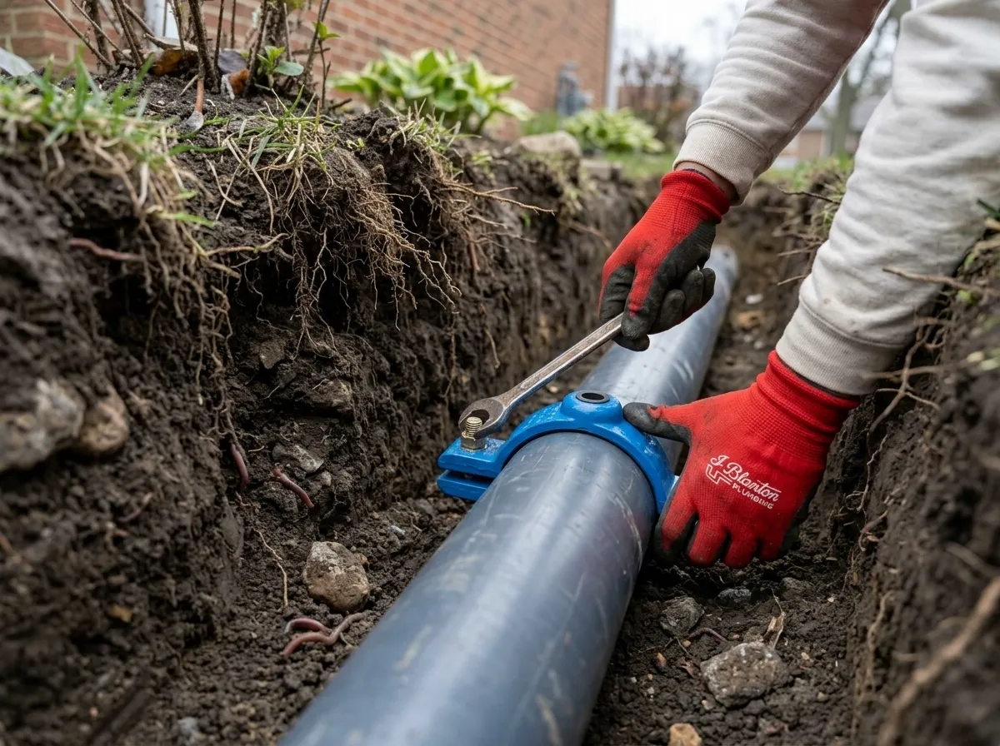
Fixes a damaged section of pipe without replacing the whole line.
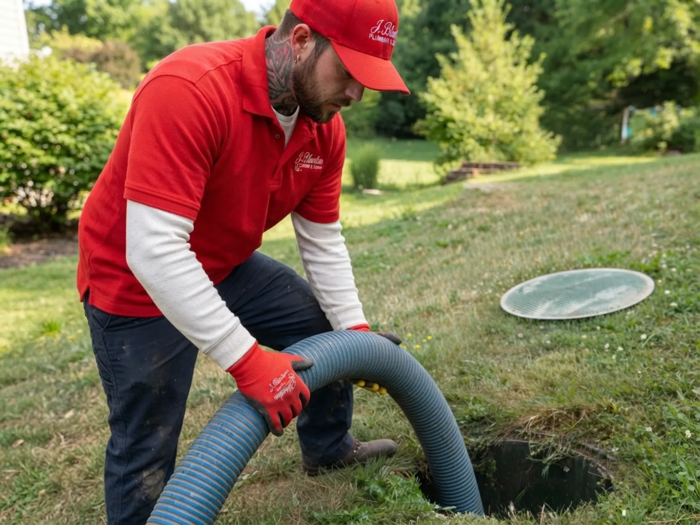
For lines too far gone for a targeted repair.
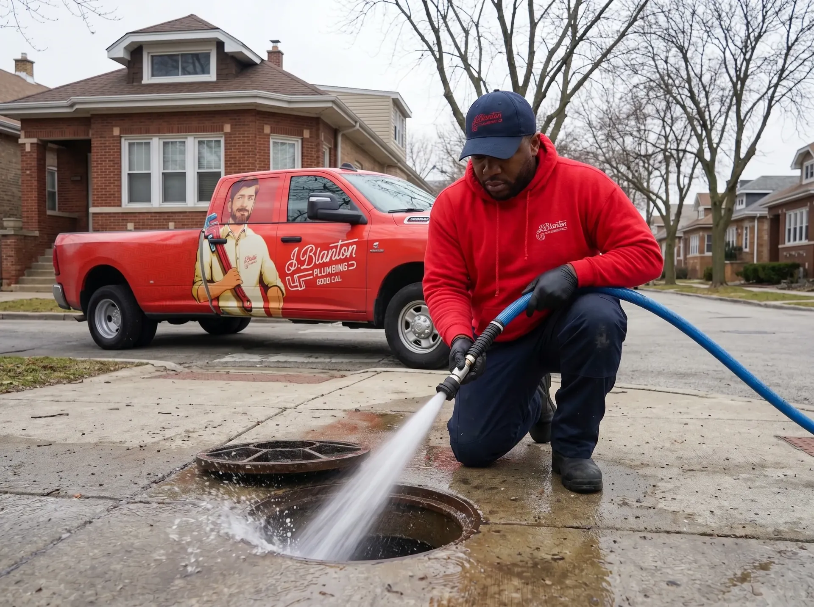
Flush out older buildup with high-pressure water.
See exactly what's causing the problem before any work begins.
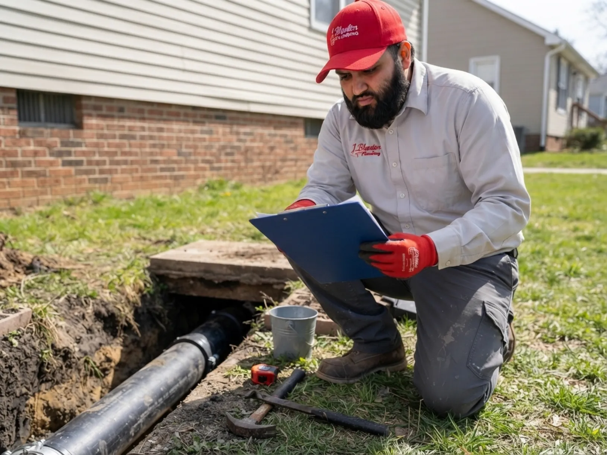
Routine service that catches small issues before they become a backup.
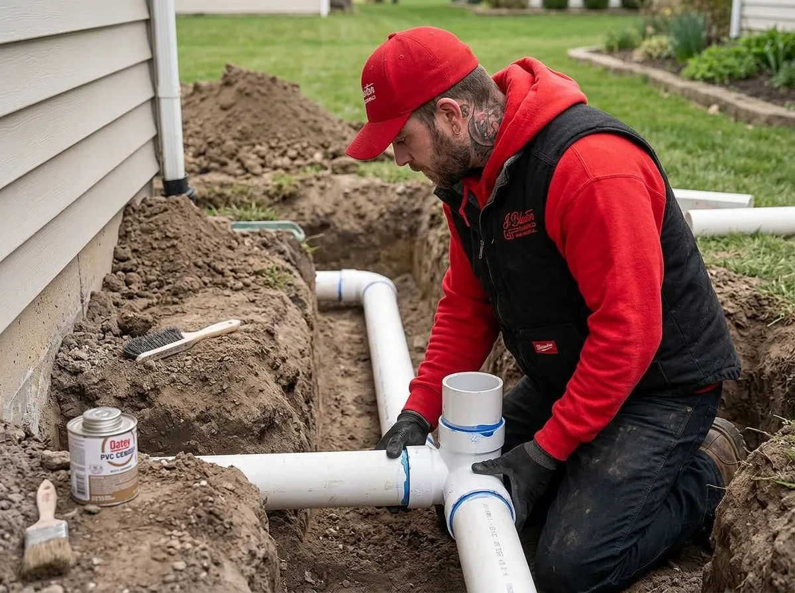
New lines for new builds, conversions, and system upgrades.
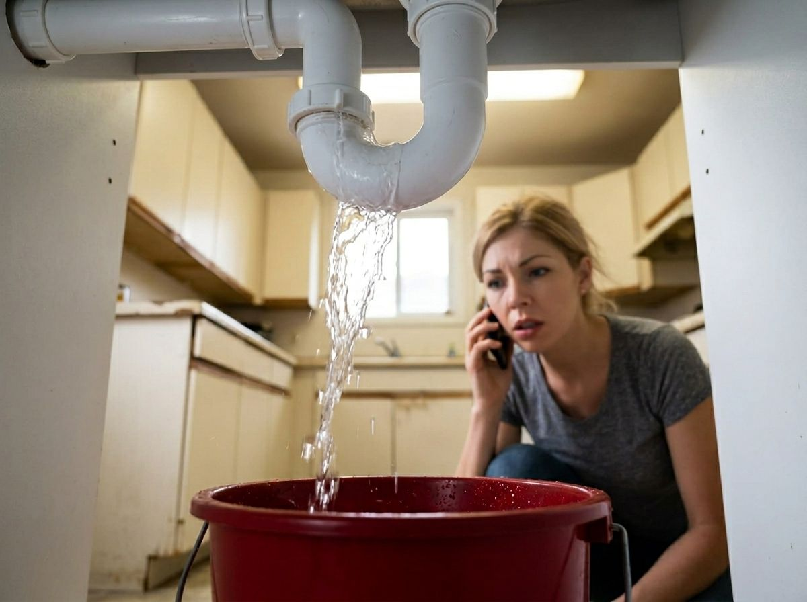
Dispatched nights, weekends, and holidays.
We’ve been fixing sewer lines for over 30 years, and we’ll tell you exactly what’s wrong before we touch anything. One call gets it handled.